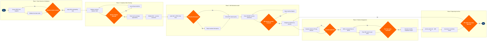

| Step | L4 Step Name | KPI / Target | Pain Point / Risk | Gate |
|---|---|---|---|---|
| 1.1 | Extract ATPCO fare inventory snapshot | Data extract completeness ≥99.5% of active fare records | ATPCO batch updates carry a 4–6 hr lag before GDS distribution; auditing a stale snapshot generates false-positive violations and wastes analyst investigation time | |
| 1.2 | Validate fare basis codes against tariff rules | Validation processing time <2 hrs per 10,000 fare records; error detection rate ≥98% | Airlines with complex fare families (50+ basis codes per market) generate thousands of rule combinations; automated rule parsing frequently misinterprets footnote exceptions (ATPCO Category 15/25) requiring manual override | |
| 1.3 | Cross-check fare coverage against active route inventory | Market coverage completeness ≥98% of active O&D pairs with valid filed fares | New routes activated in SkyWORKS may lack corresponding ATPCO filings within the required 24-hr effective-date window, causing inventory to distribute without valid fares and triggering GDS pricing errors | ⚠ |
| 2.1 | Apply IATA fare construction and combinability rules | Fare construction error rate <0.5% of total filed fares per audit cycle | IATA Resolution 722 combinability rules for international itineraries interact unpredictably with carrier-specific footnotes in multi-carrier routings, producing false-positive violations that require manual SME adjudication | |
| 2.2 | Validate routing and stopover rule compliance | Routing rule compliance rate ≥99.2% of fare records processed | Legacy routing rule structures in ATPCO Category 3 (Combinations) and Category 4 (Flight Application) produce ambiguous interpretations when codeshare partners operate a segment, leading to disputed ticketing and potential BSP billing errors | ⚠ |
| 2.3 | Check tax and surcharge applicability per market | Tax calculation accuracy ≥99.9%; YQ/YR surcharge compliance 100% within 2 hrs of ATPCO tax update | Fuel surcharge (YQ) and carrier-imposed fee (YR) changes in volatile fuel markets require weekly ATPCO refile cycles; GDS distribution lag of 2–8 hrs post-change causes live mispricing and potential DOT consumer-protection violations (14 CFR Part 399) | |
| 2.4 | Validate NUC and local-currency conversion compliance | NUC conversion error rate <0.1% of international fare records; local-currency price cap breach detection within 48 hrs of IATA ROE update | Monthly IATA ROE table updates can cause international fares to breach local-currency price caps in regulated markets (India DGCA, China CAAC) if automated re-pricing is not triggered within 48 hrs of the ROE effective date | |
| 3.1 | Audit GDS-distributed fares against ATPCO filed records | GDS fare parity compliance ≥99.5% of sampled fare records across all three GDS channels | GDS fare cache refresh cycles (typically 4–6 hrs) mean stale fares remain bookable after ATPCO updates, creating revenue leakage, customer disputes, and potential IATA passenger protection liability | ⚠ |
| 3.2 | Verify NDC channel fare parity vs. filed fares | NDC–GDS price parity within ±$5 for equivalent fare conditions; parity deviations resolved within 24 hrs | NDC API responses bypass ATPCO rule validation for some offers, making automated compliance checking impossible; pricing inconsistencies between NDC and GDS are invisible to standard GDS audit tools and surface only through traveller complaints | |
| 3.3 | Check interline fare settlement compliance via IATA BSP | Interline proration error rate <0.3%; BSP reconciliation variance within ±0.1% of billed amount | Joint fare agreements with codeshare partners may not be synchronised with ATPCO filings; discrepancies surface only at monthly IATA BSP settlement, generating disputed interline billings that average 45 days to resolve | ⚠ |
| 4.1 | Log and categorise fare violations by severity | Violation triage completion within 4 hrs of audit run; critical issues escalated within 30 min of detection | No single platform aggregates violations across ATPCO, GDS, NDC, and BSP channels; analysts maintain parallel spreadsheets, creating version-control risk, delayed escalation, and fragmented audit evidence for regulatory review | |
| 4.2 | Escalate critical violations to Director of Pricing | Critical violation resolution SLA ≤4 hrs from detection to correction order issued | Pricing team refile authority requires dual-sign-off for fares above the materiality threshold; approval bottleneck averages 2.5 hrs, exceeding SLA during peak booking windows where revenue leakage compounds each hour | ⚠ |
| 4.3 | Refile corrected fares to ATPCO | ATPCO refile processing time ≤2 hrs (standard) / ≤30 min (emergency filing window) | ATPCO emergency filing window has limited daily capacity; peak-period conflicts when multiple carriers file simultaneously cause queue delays that extend GDS mispricing exposure and increase DOT violation risk | |
| 4.4 | Flush GDS cache and verify re-distributed fare accuracy | Post-flush fare parity restoration within 2 hrs across all three GDS; spot-check sample ≥50 O&D pairs per GDS | GDS cache flush APIs differ by provider — Sabre requires separate requests per point-of-sale market; Travelport legacy ATPCO feeds lack API hooks and require manual cache refresh, extending mispricing window to 6+ hrs in some markets | ⚠ |
| 5.1 | Generate monthly compliance audit report with trend analysis | Report delivered by 5th business day of following month; violation trend growth ≤2% MoM | Audit data from ATPCO, GDS feeds, BSP, and NDC channels is not integrated in a single data warehouse; manual consolidation requires 2–3 analyst-days per month and increases error risk in board-level reporting | |
| 5.2 | Archive audit trail for DOT and IATA regulatory review | Archive completeness 100%; document retrieval SLA ≤48 hrs for regulatory or legal requests | DOT consumer protection regulations (14 CFR Part 399) require documented evidence of fare display accuracy; incomplete or unstructured archives expose the carrier to civil penalties up to $37,500 per violation per day during DOT enforcement actions | |
| 5.3 | Review audit KPIs in pricing governance committee | Governance review completed within 10 business days of report delivery; 100% of action items assigned with named owner and due date | Audit findings from international and interline markets require cross-functional alignment with Legal, Finance, and partner airlines; average alignment time of 3–4 weeks delays the corrective roadmap and allows repeat violations in the same audit cycle | ⚠ |